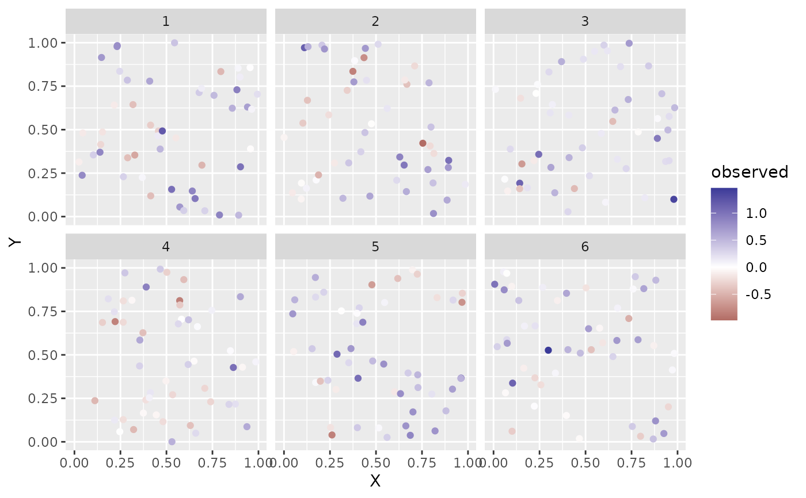

sdmTMB_simulate() uses TMB to simulate new data given specified parameter
values. simulate.sdmTMB(), on the other hand, takes an existing model fit
and simulates new observations and optionally new random effects.
Usage
sdmTMB_simulate(
formula,
data,
mesh,
family = gaussian(link = "identity"),
time = NULL,
B = NULL,
range = NULL,
rho = NULL,
sigma_O = NULL,
sigma_E = NULL,
sigma_Z = NULL,
phi = NULL,
tweedie_p = NULL,
df = NULL,
threshold_coefs = NULL,
fixed_re = list(omega_s = NULL, epsilon_st = NULL, zeta_s = NULL),
previous_fit = NULL,
seed = sample.int(1e+06, 1),
...
)Arguments
- formula
A one-sided formula describing the fixed-effect structure. Random intercepts are not (yet) supported. Fixed effects should match the corresponding
Bargument vector of coefficient values.- data
A data frame containing the predictors described in
formulaand the time column iftimeis specified.- mesh
Output from
make_mesh().- family
Family as in
sdmTMB(). Delta families are not supported. Instead, simulate the two component models separately and combine.- time
The time column name.
- B
A vector of beta values (fixed-effect coefficient values).
- range
Parameter that controls the decay of spatial correlation. If a vector of length 2,
share_rangewill be set toFALSEand the spatial and spatiotemporal ranges will be unique.- rho
Spatiotemporal correlation between years; should be between -1 and 1.
- sigma_O
SD of spatial process (Omega).
- sigma_E
SD of spatiotemporal process (Epsilon).
- sigma_Z
SD of spatially varying coefficient field (Zeta).
- phi
Observation error scale parameter (e.g., SD in Gaussian).
- tweedie_p
Tweedie p (power) parameter; between 1 and 2.
- df
Student-t degrees of freedom.
- threshold_coefs
An optional vector of threshold coefficient values if the
formulaincludesbreakpt()orlogistic(). Ifbreakpt(), these are slope and cut values. Iflogistic(), these are the threshold at which the function is 50% of the maximum, the threshold at which the function is 95% of the maximum, and the maximum. See the model description vignette for details.- fixed_re
A list of optional random effects to fix at specified (e.g., previously estimated) values. Values of
NULLwill result in the random effects being simulated.- previous_fit
(Deprecated; please use
simulate.sdmTMB()). An optional previoussdmTMB()fit to pull parameter values. Will be over-ruled by any non-NULL specified parameter arguments.- seed
Seed number.
- ...
Any other arguments to pass to
sdmTMB().
Value
A data frame where:
The 1st column is the time variable (if present).
The 2nd and 3rd columns are the spatial coordinates.
omega_srepresents the simulated spatial random effects (only if present).zeta_srepresents the simulated spatial varying covariate field (only if present).epsilon_strepresents the simulated spatiotemporal random effects (only if present).etais the true value in link spacemuis the true value in inverse link space.observedrepresents the simulated process with observation error.The remaining columns are the fixed-effect model matrix.
Examples
set.seed(123)
# make fake predictor(s) (a1) and sampling locations:
predictor_dat <- data.frame(
X = runif(300), Y = runif(300),
a1 = rnorm(300), year = rep(1:6, each = 50)
)
mesh <- make_mesh(predictor_dat, xy_cols = c("X", "Y"), cutoff = 0.1)
sim_dat <- sdmTMB_simulate(
formula = ~ 1 + a1,
data = predictor_dat,
time = "year",
mesh = mesh,
family = gaussian(),
range = 0.5,
sigma_E = 0.1,
phi = 0.1,
sigma_O = 0.2,
seed = 42,
B = c(0.2, -0.4) # B0 = intercept, B1 = a1 slope
)
head(sim_dat)
#> year X Y omega_s epsilon_st mu eta
#> 1 1 0.2875775 0.784575267 -0.02131861 -0.02779393 0.4369843 0.4369843
#> 2 1 0.7883051 0.009429905 0.28852319 0.09092583 0.8805246 0.8805246
#> 3 1 0.4089769 0.779065883 0.13541643 -0.08468148 0.6261504 0.6261504
#> 4 1 0.8830174 0.729390652 0.28597232 -0.01660011 0.8903775 0.8903775
#> 5 1 0.9404673 0.630131853 0.21070545 0.02005202 0.6056213 0.6056213
#> 6 1 0.0455565 0.480910830 -0.08071932 -0.11409909 -0.1272901 -0.1272901
#> observed (Intercept) a1
#> 1 0.4176273 1 -0.7152422
#> 2 0.8802910 1 -0.7526890
#> 3 0.6248675 1 -0.9385387
#> 4 0.9055722 1 -1.0525133
#> 5 0.6654724 1 -0.4371595
#> 6 -0.1399113 1 0.3311792
if (require("ggplot2", quietly = TRUE)) {
ggplot(sim_dat, aes(X, Y, colour = observed)) +
geom_point() +
facet_wrap(~year) +
scale_color_gradient2()
}

# fit to the simulated data:
fit <- sdmTMB(observed ~ a1, data = sim_dat, mesh = mesh, time = "year")
fit
#> Spatiotemporal model fit by ML ['sdmTMB']
#> Formula: observed ~ a1
#> Mesh: mesh (isotropic covariance)
#> Time column: year
#> Data: sim_dat
#> Family: gaussian(link = 'identity')
#>
#> coef.est coef.se
#> (Intercept) 0.23 0.09
#> a1 -0.39 0.01
#>
#> Dispersion parameter: 0.09
#> Matérn range: 0.40
#> Spatial SD: 0.21
#> Spatiotemporal IID SD: 0.11
#> ML criterion at convergence: -162.527
#>
#> See ?tidy.sdmTMB to extract these values as a data frame.